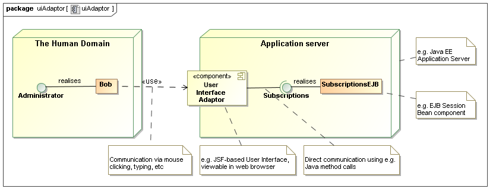
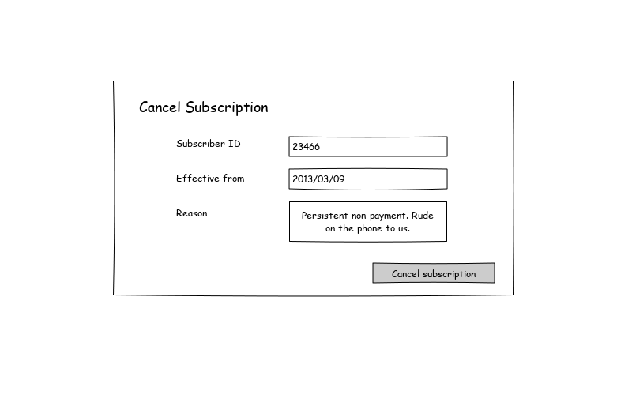
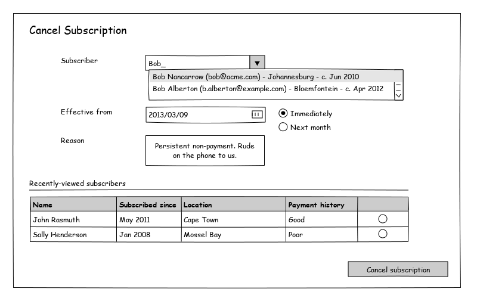
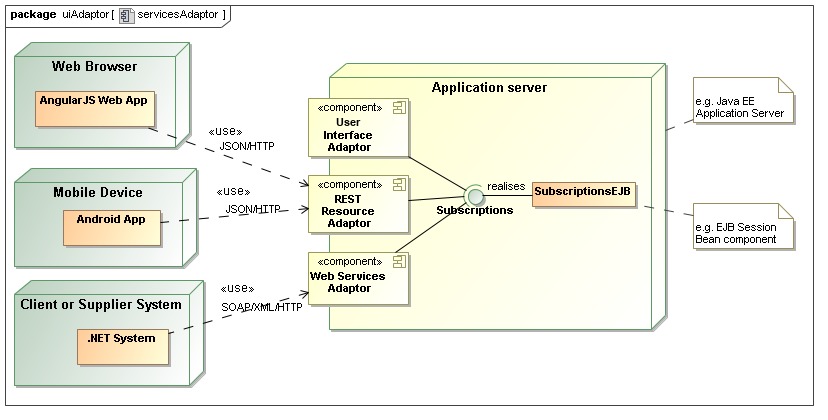

After completing an URDAD analysis and design cycle (detail not shown here), the result might be the following responsibility allocation:
The requirements for a new system are frequently expressed as one technology-specific document ("Business Requirements Specification"), describing, for example, the development of a web-based portal or mobile device app.
When we follow a model-driven development process, the requirements for such a project are ultimately interpreted in two independent "layers":
In the context of a provided Business Requirements Specification, this process may at first seem to introduce unnecessary complexity into the process - after all, "why don't you just build it ?"
Experience has, however, shown that this separation - which is a key aspect of model-driven development
While the user interface is arguably the most important aspect for most users of a system - and hence enjoys a great deal of emphasis in business requirements documentation - it may seem counter-intuitive that no mention of the user interface is made in the PIM, or in the functional requirements.
When we perform technology-neutral analysis and design, it the entire system could functionally be realised by almost any technology - albeit with different qualities. During this phase, it helps to imagine that we are living a couple of hundred years in the past, with nothing but people, and paper-based forms.
Where is the user interface now?If Victorian-era systems aren't your thing, imagine deploying your system a couple of hundred years into the future - where every component could be realised by a software component entirely, leaving us humans to get on doing things that we enjoy doing. When we do need to interact with the system, we may be able to directly communicate with it by thought.
Again, where is the user interface now?When we design business processes independent of technology, we mean it. The User Interface is simply an adaptor between a human and a software component. Furthermore, we often need different adaptors depending on the direction of the service request, for example:
Consider a service offered by a component in a magazine distribution company to cancel a subscriber's subscription. The stakeholders have the following functional requirements:
After completing an URDAD analysis and design cycle (detail not shown here), the result might be the following responsibility allocation:

And finally the following service contract:

If both the Administrator and the Subscriptions roles are played by human beings, no adaptor would be required between them. All that would be required is for a message path to be established (either by making a telephone call, or by walking to the appropriate desk) and requesting the service by voice:
"Hi. Please cancel the subscrition for John Deere - subscription
number 46234 - effective next month. This is because of non-payment."
The Administrator is verbally constructing and submitting a CancelSubscriptionRequest.
If the Administrator is a human being, and is interacting with a software implementation of Subscriptions, an adaptor is required. Typical application server environments allow us to host that adaptor together with the software system:

The role played by this adaptor is still simply to let the user construct and submit a CancelSubscriptionRequest, albeit with certain qualities:
Quality requirements such as usability dictate the use of certain strategies, and these dramatically impact the details of the user interface.
In the case of canceling a subscription, the Administrator has to provide a reference (UML Association) to the subscriber in question. This implies an object reference, or a shared identifier, that the administrator needs to provide to the Subscriptions service.
A user interface with low usability might leave the responsibility of identifying the subscriber, or entering the date correctly, entirely in the hands of the user:

A user interface with high usability might make it much easier for the administrator to pick the subsciber whose subscription to cancel, employing multiple strategies: Name-based, as-you-type searching, and recalling recently-used information:

The user interface with greater usability introduces the need for several finer-grained services. These are often not in the scope of a technology-neutral functional requirements, and are introduced only to support certain quality requirements of technology adaptors, like user interfaces. There are at least three such use-cases here:
The same holds true for various pieces of infrastructure that make other qualities available, for example: having to "log in" before using the user interface, to support auditability and access control.
Of course, accessibility (through various channels) is a common quality requirement, and typical application deployment environments (such as Java EE) provide the ability to host various other adaptors - either to facilitate different user interface technology, or for systems integration:

When we treat our user interface as simply an adaptor, we are usually ready for any other kind of adaptor to be rapidly applied, since the core service was designed without user interface (or any other technology-specific) concerns.
A Use-case is defined as a "service of value". This is often translated into "a reason for using the system". Logging in, or viewing a list of recently-accessed records, are not a "reason to use a system" - they only support certain quality requirements of other use-cases.
If we don't separate the core technology-neutral analysis and design from the quality requirements of a particular adaptor like a user interface, the business analysis process can quickly become bogged-down in technology-specific complexity. Furthermore, business analysts can no longer fully model the business problem - it requires the involvement of technical specialists.
Only once the core business processes are analysed and designed, the requirements of technology-specific adaptors - such as user interfaces - are analysed (we can't ignore them, after all!). This is now a much simpler, well-defined task, usually resulting in greater quality, consistency, and re-use.
Separate design and technical implementation teams can, from an early stage of the project, start addressing both the functional and non-functional requirements concurrently, in the spirit of Model-Driven Development.